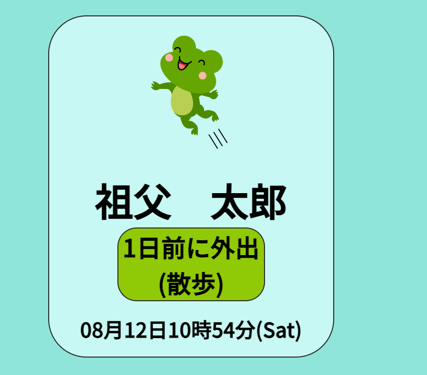
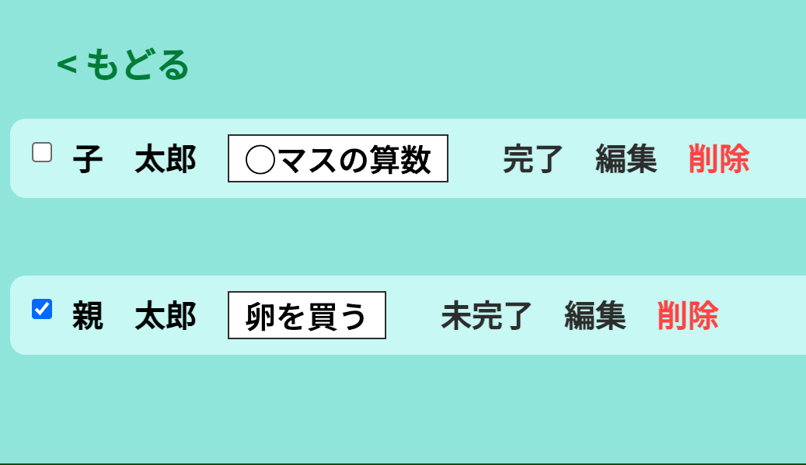
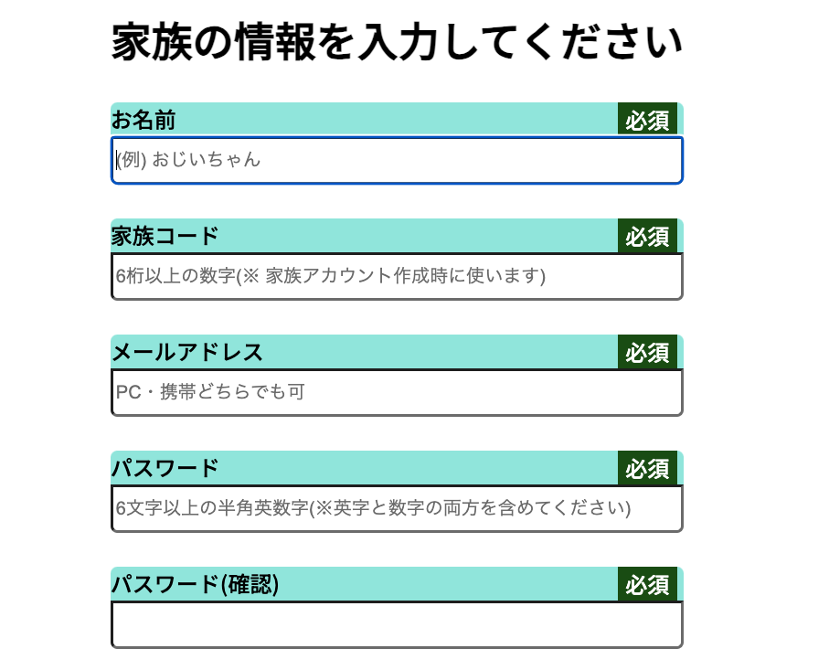

BCON(安否確認アプリ)
開発環境
Ruby / Ruby on Rails / MySQL / GitHub / Render / Visual Studio Code
-
概要
制作時間 130時間 URL https://originalapp-ddt.onrender.com/ ID aihonorin PASS 8790 -
動作テスト
テスト用アカウント
mail 1@test.com PASS d000000
OUTLINEアプリケーションの概要
自身の安否状況を外出、帰宅の都度発信するアプリです。
この機能により、家族が安否確認のために無駄に連絡を取り合う必要をなくし、その負担やストレスが軽減されるように開発しました。
主な機能は、外出帰宅の通知（表示）、共有メモです。
メモを作成した場合は、安否状況と共に表示してメモがあることをお知らせするので、ユーザーである他の家族とメモを共有して普段の生活で互いにタスク管理をするよにして使うことができます。
家族が同じ家で生活していない場合でも、このようにアプリ上で繋がることで安心感を得ることができます。
-
開発に至った経緯
今までの仕事での経験ですが、別居している高齢の親が心配なので見にいって欲しいといった依頼の電話がよく入ったり、逆に、一人暮らしをしている高齢の方は、防犯面で不安を抱えているが、家族に迷惑をかけられないということで孤立するケースもよく見られました。
安否確認は、電話やメール、LINEなどのツールを使って連絡すれば済む話ですが、仕事をしている家族にとって朝も夜も毎日のように連絡することはとても労力がいることでそれなりの負担とストレスがかかることがこれまでの経験で分かりました。
加えて現代は共働き世帯が多く、家にはいつも子供が1人でいるといった世帯も多い中、世の中では様々な凶悪犯罪が後を絶たない状況にあり、日常において家族の安否確認は不可欠なものであると考えました。
これらの問題を少しでも解決するために、外出・帰宅といった日常必ず起こすアクションに絞って安否状況を発信することで負担やストレスをかけることなく家族の安否確認ができ、かつ日常的に家族がアプリで繋がることで安心感を醸成できるアプリケーションを開発することにしました。
-
開発で工夫したこと
 主な利用者を高齢者と子供と想定したとき、無駄な機能は省いて必要最低限の機能のみ実装し、直感的に操作ができることを大前提に作成しました。表示される項目は、「外出」「帰宅」の2種類しかないのですが、さらに分かりやすくカエルのイメージを種類別に表示するようにしました。（飛び跳ねるカエル＝「外出」）（横になるカエル＝「帰宅」）
安否状況を発信した時刻も一目でわかるように、通知した時刻から現在までの経過時間を計算して、「（例）⚪︎分前に外出」といった表示がされるようにしました。
日常的に使えるようにプラスアルファの機能でメモアプリを実装しましたが、家族で共有できるようにあえて編集、削除といった機能権限を設定しないで家族間で自由に使えるようにしました。また、メモにチェック機能をつけることでタスク管理のようにして普段使いでも活かせるようにしました。
プライバシーな情報を扱うため、家族アカウント機能を設定し、バリデーションを複数箇所に設定してセキュリティ対策をしました。
-
今後実装したいと思っていること
現在、より直感的かつ効率的に操作できるようページ遷移した先のフォームからの入力ではなく、表示されたユーザーのイメージを直接、外出、帰宅の別に設定された場所にドロップし、表示切り替えできるような機能を思考中です。
今後は、よりシンプルに使用できるよう新規登録時のemailなどの項目を減らしつつもセキュリティー面での向上を考えて、クライアント側がランダムに生成したユーザー識別コードを提供し、識別コードをユーザー間で承認する形で初めてアプリが利用できるようなセキュリティー機能や子供が使用することも考慮し、楽しんでアプリを積極的に使ってもらえるよう外出、帰宅の通知回数に応じてイベント機能を実装することも考えています。
例えば回数に応じてユーザーを表すカエルのイメージが徐々にオタマジャクシからカエルに成長する機能などをつけることで、それを楽しみにした子供が自ら朝学校に登校する準備をしてスムーズに登校できるようになれば、朝の忙しい時間帯も余裕を作れるようになると思うので、このような機能も追加で実装予定です。